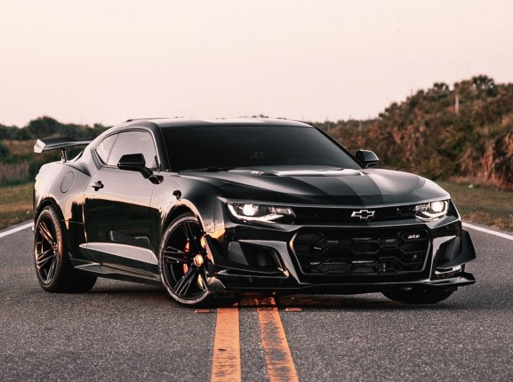
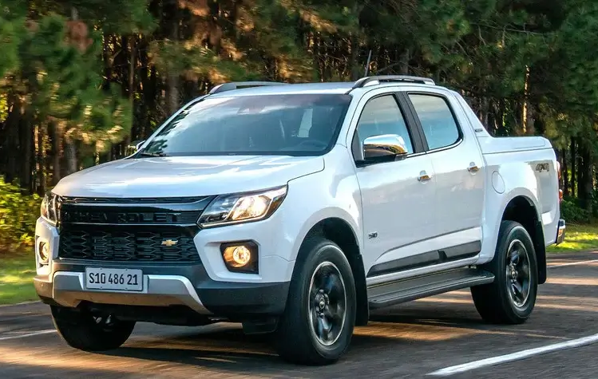
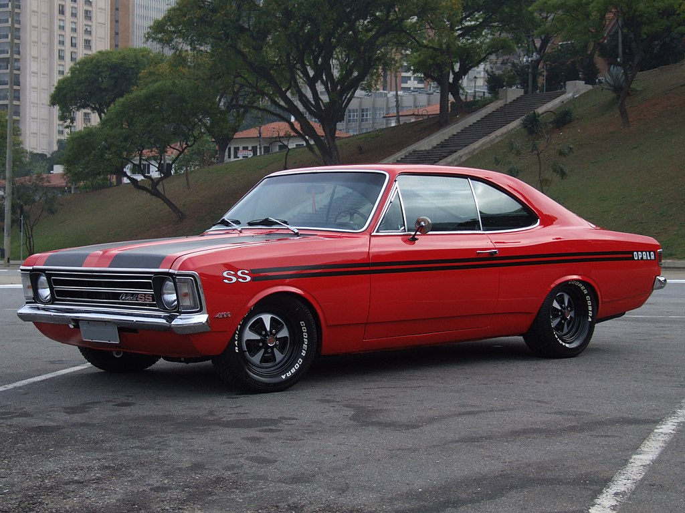
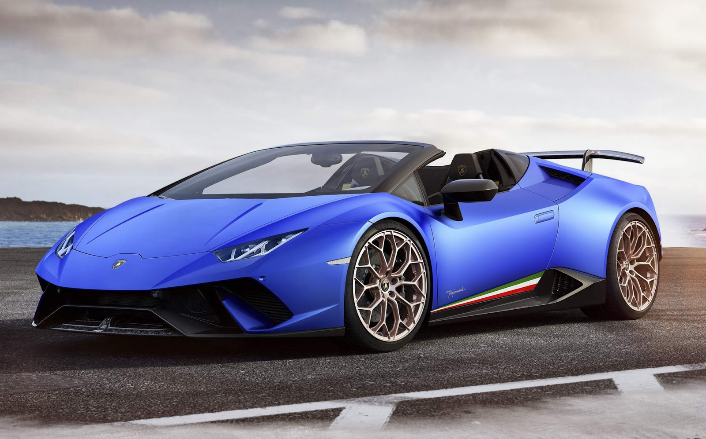

-
Camaro ZL1 #001
- 2023
- 640cv
O Camaro ZL1, que será exibido no Salão de Nova Iorque, tem 640 cv (60 cv a mais que o ZL1 anterior) e 87 mkgf de torque máximo, originados do motor 6.2 V8 LT4 supercharged, podendo funcionar em conjunto com uma caixa de câmbio manual de seis velocidades ou automática de 10 marchas.
-
Mustang R-Spec #002

- 2020
- 710cv
Na Austrália a Ford apresentou o Mustang R-Spec, uma versão feita em parceria com a preparadora Herrod Performance. Para chegar nessa potência, adicionaram ao motor do Mustang um supercharger do tipo Roots com 2,65 litros de capacidade, que opera 0,8 bar. Graças a adoção dessa pimenta é que o muscle car conseguiu fazer o motor render 710 cv e 84,3 kgfm de torque! Além da preparação no motor, o Mustang R-Spec ainda recebeu barras estabilizadoras mais grossas na dianteira (5 mm) e na traseira (3 mm), amortecedores magnéticos e rodas de 19 polegadas calçadas com pneus Michelin Pilot Sport 4S. Já no quesito visual o cupê ganhou um novo para-choque com novas e maiores entradas de ar, além de adesivos alusivos a versão e uma pintura exclusiva em um belo tom de verde radioativo.
-
S-10 High Country #003
- 2023
- 200cv
A S10 High Country traz um motor 2.8 turbo diesel, de quatro cilindros em linha e 16 válvulas. O motor gera 200 cv de potência e 51 kgfm de torque máximo. A aceleração de 0 a 100 km/h é realizada em 10,1 segundos e a velocidade máxima é de 180 km/h. Além disso, a picape da conta com transmissão automática de seis marchas e tração integral (4x4).
-
Corvette C6 ZR1 #004

- 2012
- 647cv
A GM confirmou um V8 LS9 de 6,2 L sobrealimentado com potência de 647cv a 6.500 rpm e 604 lb⋅ft (819 N⋅m) de torque a 3.800 rpm. Um teste do ZR1 na autobahn alemã revelou uma velocidade máxima de 192 mph (309 km/h), embora o fabricante afirme que o carro foi projetado para atingir velocidades de até 205 mph (330 km/h). A fibra de carbono é usada no teto, capô, para-lamas, divisor dianteiro e molduras de balancins; O capô e os para-lamas são pintados, enquanto o teto e o divisor são apenas cobertos por um revestimento transparente, mantendo sua cor preta original.
-
Opala SS Coupe 4.1 #005
- 1974
- 140cv
Lindo Chevrolet Opala caracterizado em SS6 1974/1974 na cor Vermelho Fórmula, carro totalmente restaurado nos mínimos detalhes! Carro impecável! Pneus Cooper Cobra Radial G/T 235/60R14 na traseira e 215/60R14 na dianteira. Motor Chevrolet 4100 (250 pol³) de 6 Cilindros em linha de 140 cv a 4000RPM e 29 kgfm a 2400RPM (Bruto) ou 115CV a 3800RPM e 26Kgfm entre 1600 e 2400RPM (Líquido). Uma versão esportiva do Opala já era objeto de especulação no início de 1970. Dizia-se que teria um tempero mais picante, com direito a carburadores duplos ou triplos e realmente teve, esse carro é incrível.
-
Omega CD 4.1 #006

- 1998
- 168cv
O 4.1 do Opala, reformulado pela Lotus e com injeção eletrônica e 168 cv, substituiu o 3.0 e o 2.0 a gasolina virava 2.2, com 116 cv. O CD 4.1 recebia aerofólio, imitação de madeira em painel e portas, retrovisor eletrônico e novas rodas. Na pista de testes, apesar de mais potente que o 3.0, a nova configuração foi mais lenta: 11,1 s para alcançar os 100 km/h e máxima de 202,9 km/h, além do consumo mais elevado.
-
Lamborghini Performance Spyder #007
- 2021
- 640cv
O ano modelo 2021 do Lamborghini Huracan Performante Spyder vem numa espantosa cor azul que certamente virará cabeças. É alimentado por um motor V10 de 5,2 litros de aspiração natural que produz 640 cavalos de potência e 443 libras de torque. O motor é emparelhado com uma transmissão automática de dupla embreagem de 7 velocidades que envia potência para as quatro rodas. O Huracan Performante Spyder está equipado com características aerodinâmicas avançadas, incluindo um spoiler traseiro activo e um divisor frontal, que ajudam a melhorar a força descendente e a estabilidade a alta velocidade. A parte superior conversível é feita de materiais leves e pode ser levantada ou baixada em apenas 17 segundos, mesmo enquanto se conduz a velocidades até 31 mph.
-
Silverado High Country #008

- 2024
- 360cv
A nova Chevrolet Silverado já tinha sido confirmada na versão High Country. Terá o motor 5.3 V8 a gasolina, com 360 cv e 53 kgfm de torque, com uma tecnologia de desativação de cilindros para poupar combustível. O pacote deverá ser o mais completo possível, assim como já acontece com suas principais concorrentes, Ford F-150 Platinum e Ram 1500 Limited.
-
Dodge Charger #009

- 1970
- 375cv
O Charger R/T 1970 tinha um motor V8 Magnum de 440 polegadas cúbicas (7,2 litros) com 375 cavalos e 490 libras-pé de torque. O carburador de quatro corpos alimentava esse motor, que tinha uma taxa de compressão de 10,5:1. Mas havia outras opções de motorização para quem quisesse mais desempenho como o 426 Hemi, um V8 de 426 polegadas cúbicas (7 litros) com duas válvulas por cilindro e dois carburadores de quatro corpos. Esse motor era capaz de entregar 425 cavalos de potência e 490 libras-pé de torque. Ele é um carro que ficou famoso por sua participação em diversos filmes e séries de TV. Um dos mais conhecidos é o filme Velozes e Furiosos, em que o personagem Dominic Toretto (Vin Diesel) tem um Charger R/T 1970 preto guardado em sua garagem. Esse carro aparece em quatro filmes da franquia, sendo usado em perseguições e corridas.
-
Ferrari 488 pista #010

- 2018
- 720cv
A 488 Pista tem 50 cv a mais do que a GTB e 11,7 kgfm a mais de torque em comparação com a 458 Speciale, graças ao ajuste feito no motor 3.9 V8 biturbo. Conta com impressionantes 720 cv a 8.000 rpm e um torque de 78,5 kgfm a 3.000 rpm. Pesa 1.280 kg, 90 kg a menos do que a GTB, fazendo com que seja o modelo de produção com a melhor relação peso-potência da Ferrari. É fácil entender porque o esportivo marcou uma volta de 1:12.5 em Fiorano, cerca de 2 segundos menos do que a GTB e a 458 Speciale.